Prerequisite — System Requirements Verification
Pre-install gate. Runs system checks (proxy, drivers, OS, RAM, connectivity, disk, certificates). Progress bar shows verification state; all green means the device is ready to install.
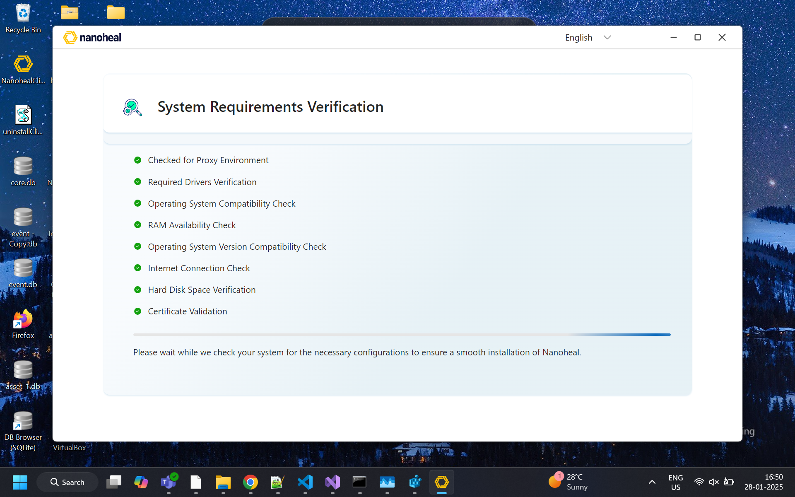
Nanoheal Electron launcher (NH_Client_UI) · screenshots from New UI Pages 3.docx + proposed Survey & Chatbot UIs · 2026-08-25
Pre-install gate. Runs system checks (proxy, drivers, OS, RAM, connectivity, disk, certificates). Progress bar shows verification state; all green means the device is ready to install.

Legal consent before install. User must acknowledge Terms and Conditions, then Install (or Cancel). Language selector is available in the header.
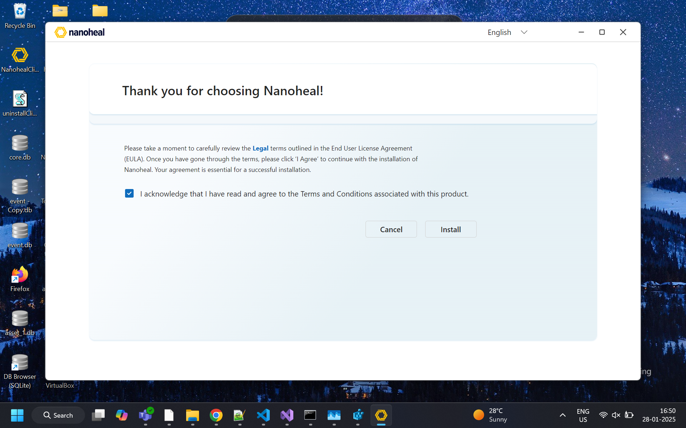
Blocking progress UI while the client installs / configures. Shows status messaging and a progress indicator until installation finishes and the post-install shell can open.
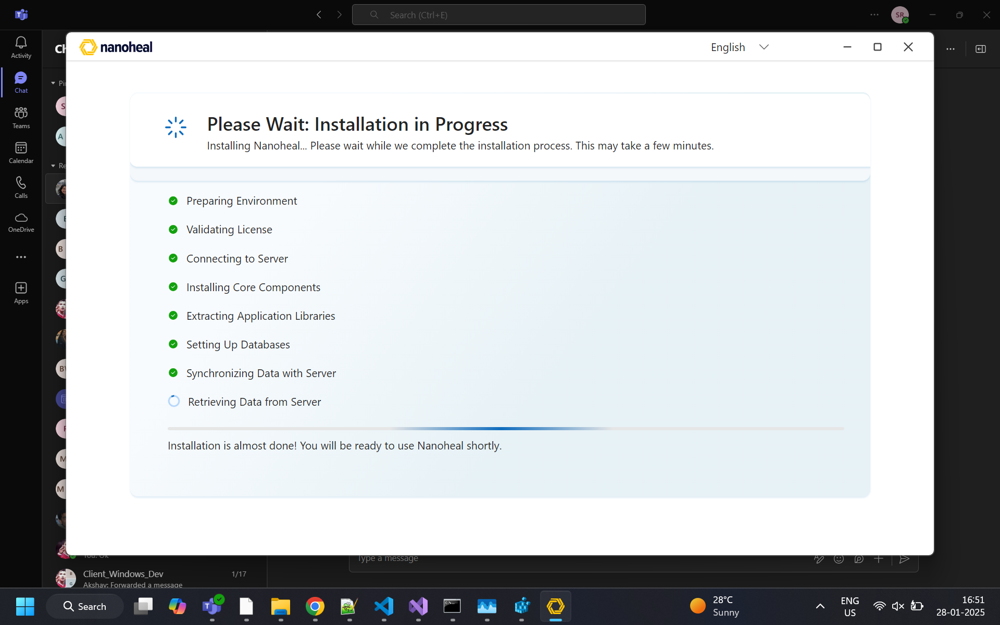
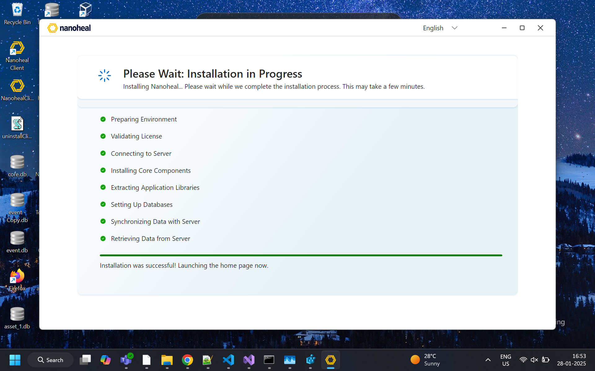
Main self-service home. Greeting, search for resolutions, category tiles (Browser, Disk, Network, Office, Teams, etc.), Frequently used resolutions sidebar, links to Device Details and Service History, plus Still Facing Issues? footer (Call / Email / Chat).
Optimize: instructional copy that says “choose a category on the left” should say “choose a category” (tiles are a 2-column grid).

Shows identity and hardware/software facts for the current machine (support context and troubleshooting). Entry from landing via Device Details →.
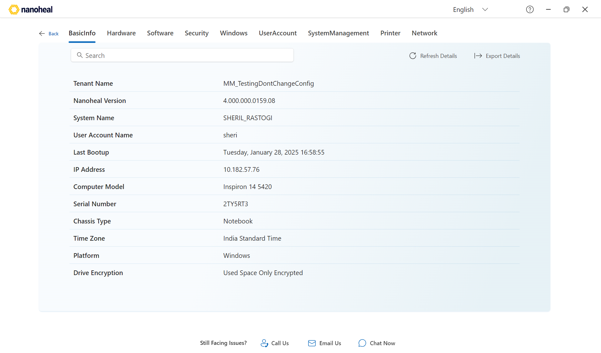
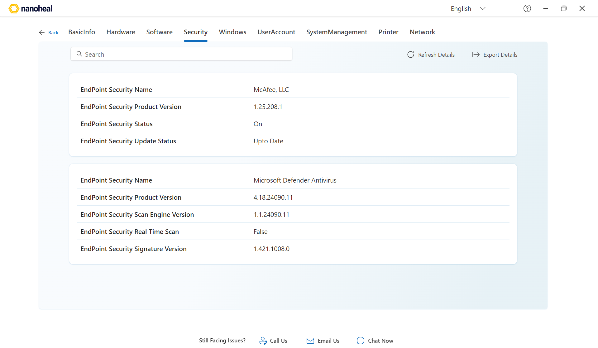
Audit of what Nanoheal ran on this device. Tabs: HistoryDetails / Autoheal / Selfhelp / Proactive / Schedule. Search, refresh, and export for logs (history text, date, duration).
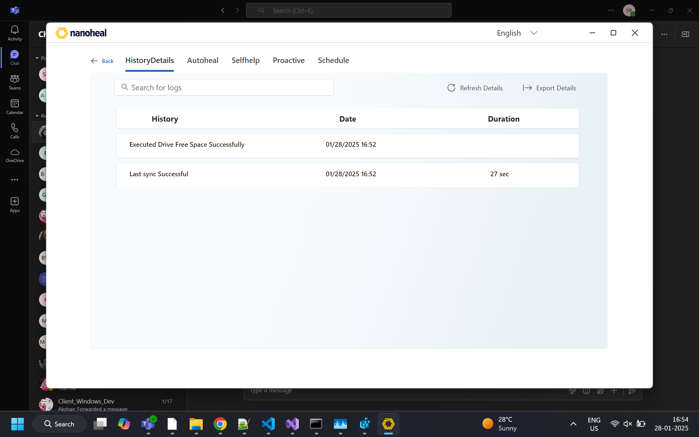
Full-text search over the resolution catalog. Each result card is a runnable fix (Outlook, Teams, performance, audio, etc.).
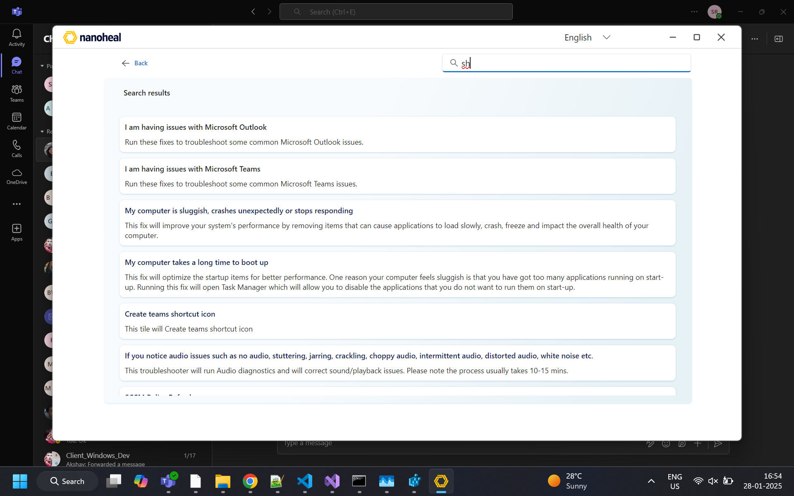
Master–detail for a product/topic. Left: list of fixes; right: description + Fix now. Breadcrumb Home → topic. Knowledge Base Update Now syncs catalog. Footer support strip remains available.
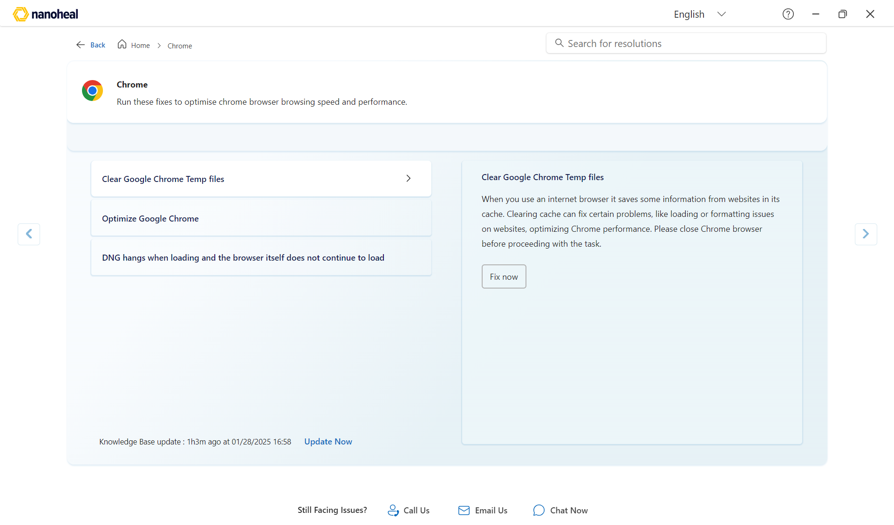
Category picker (Chrome / Firefox / IE, etc.). Selecting an item and View Solutions drills into the L3 fix list.
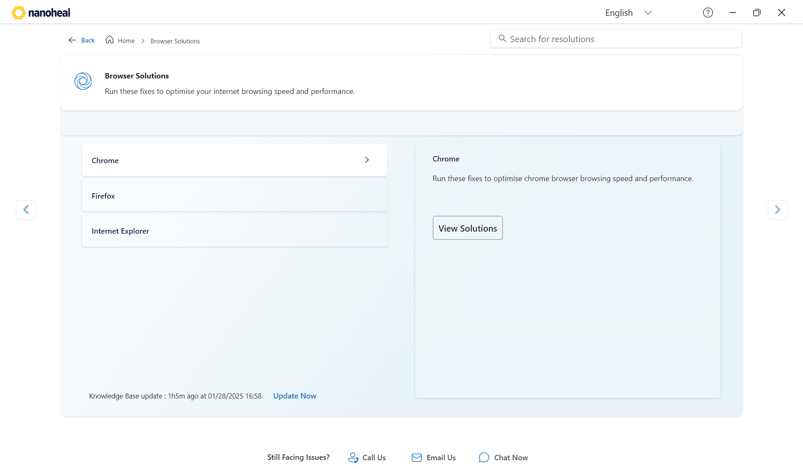
Modal tab with regional support numbers and hours. Opened from the landing/solution footer.
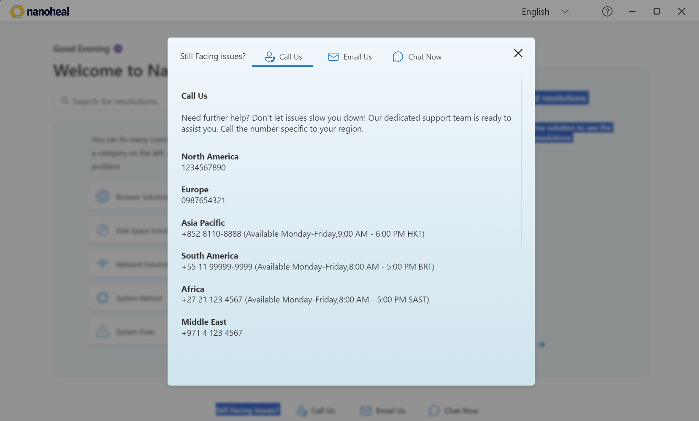
Modal tab to email support (preconfigured address from site variables).
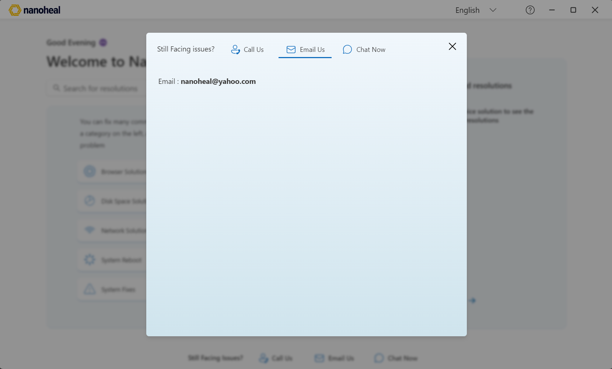
Footer / modal entry for chat. Today this typically opens an external chat link (ChatLinkNew) or optional Haya iframe widget (WidgetLink). See proposed chatbot UIs below for in-app designs.
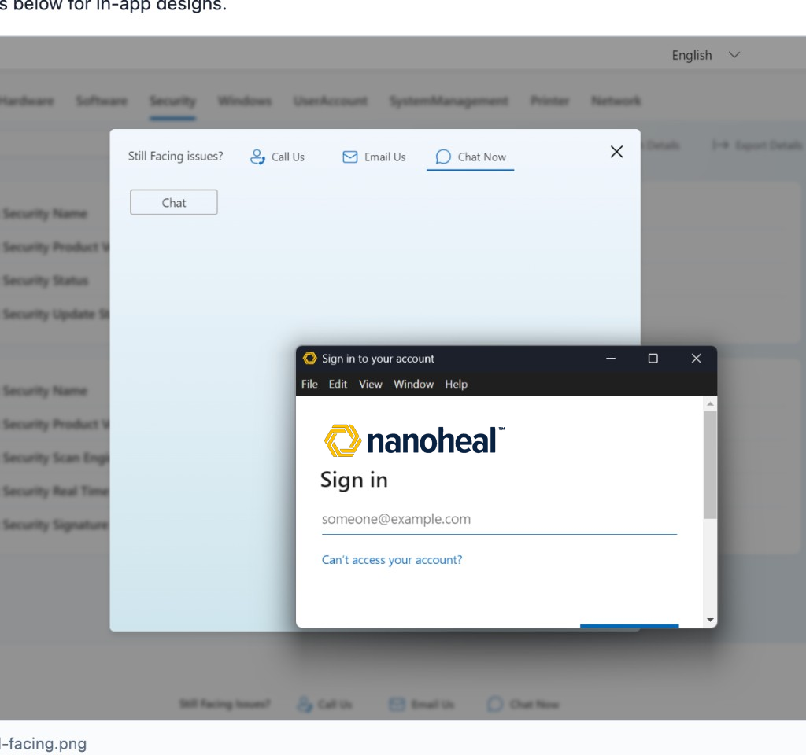
Landing UI is unchanged (attached home screenshot). Survey = centered modal; chat = separate bottom-right widget only.
Greeting is Hi. Nanoheal icon only — no Haya, no ADM. Mockups in mockups/.
Overlay on the real home page after a fix. Star rating, outcome chips, optional note. Nanoheal icon top-left of the modal header.
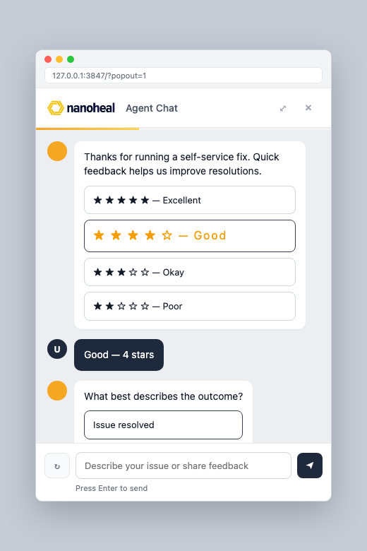
Panel fixed bottom 4rem / right 2rem, 340px × ~80vh, radius 16px. Nanoheal header + Online. Greeting: Hi. No Haya / no ADM.
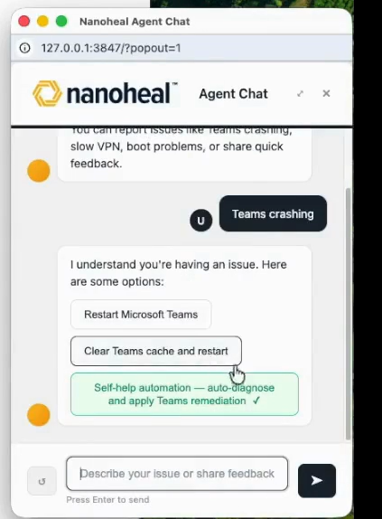
Closed FAB bottom 1rem / right 1rem — Nanoheal icon only (no blue circle).
Microsoft sign-in window after Chat Now. ADM logo removed; Nanoheal logo applied. Live branding is controlled by Entra ID company branding for the chat URL tenant.